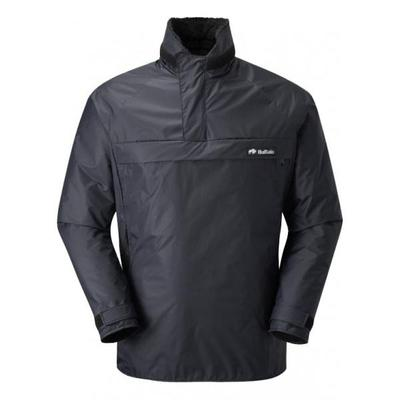

Winter Draws on ("Oh err Missus"), as Frankie Howard would have said. The first
of a few posts about clothing suitable for the outdoors in winter.
Disclaimer my Buffalo gear was mostly given to me in the 1980's by Hamish who
owned Buffalo.
Yesterday I spent most of the day in the fields in a combination of wind, sleet
and freezing rain. I was really cold and I am someone who doesn't usually
notice the cold. I should have been wearing my Special Six.
Buffalo gear has a pertex outer and a pile inner. It is specifically designed
for use in cold wet conditions. It's not waterproof in the conventional
meaning.However, your body heat keeps the inner pile layer dry and the pertex
sheds rain/snow.
I have used it a lot in Scottish winters, where you go from freezing rain into
driving snow as you gain altitude. I have never been cold provided I kept
moving. I used it at home a few Christmases ago when it was -18C
outside. Everyone else had about 10 layers on and was shivering. I had Buffalo
salopettes and my special 6 shirt and was warm all day.
The gloves are toasty warm, even when wet.
The only downside to Buffalo gear is that it is much too hot in tmeperatures
above freezing.


{kind=link}
{kind=link}
{kind=link}